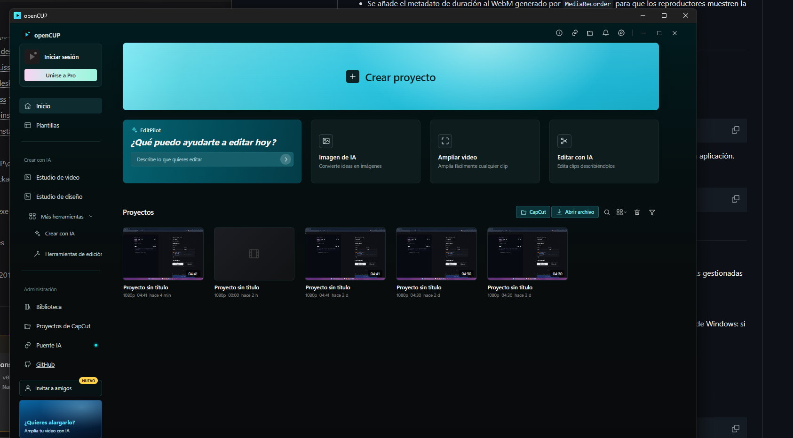
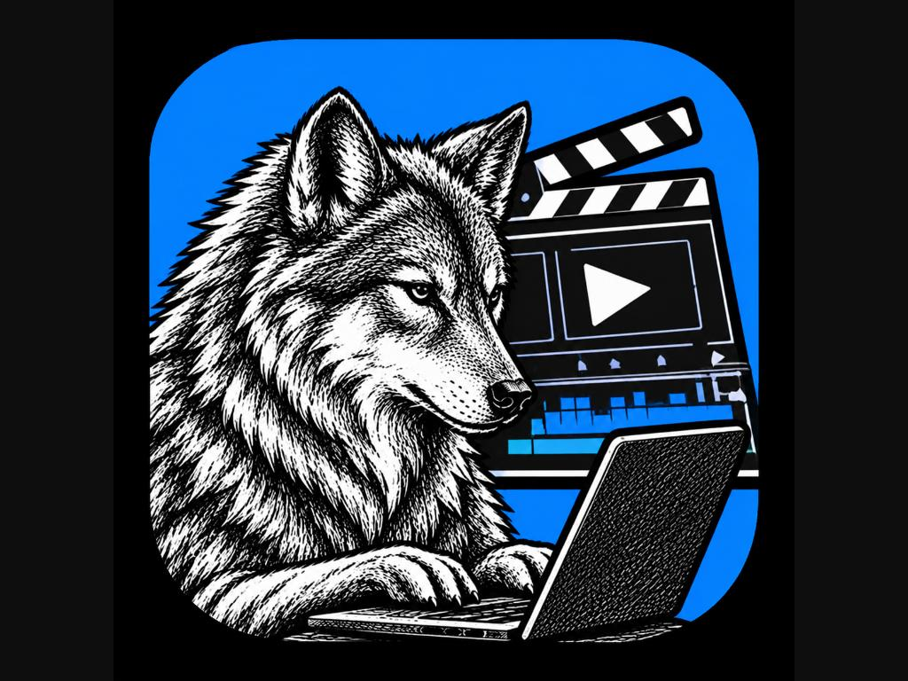

Edita vídeo sin salir de tu PC
Gratis, nativo y hecho en Rust. Sin cuenta ni nube.
Quería un editor de vídeo tipo CapCut que corriera entero en mi ordenador. Si nadie lo hacía como yo lo quería, lo hacía yo.
CapCut es rápido y bonito, pero todo pasa por sus servidores: tus vídeos, tus datos y tus renders. cupcraft busca la misma fluidez sin ceder tus archivos a nadie.
Y sin peso extra: nada de Electron, WebView ni servidor en segundo plano. Un único ejecutable que abre al instante y usa la GPU de verdad.
Qué es cupcraft
Un editor de vídeo de escritorio con línea de tiempo, efectos y exportación. Un solo ejecutable: todo ocurre en tu ordenador.

Rust, con egui y wgpu. Sin Electron ni navegador.
Multipista
Vídeo, audio, texto, stickers y efectos, con fotogramas clave.
IA que corre en tu equipo
Quita fondos y genera subtítulos con Whisper, sin subir nada.
Exporta con tu tarjeta gráfica
MP4 y WebM con NVENC, QSV o AMF cuando están disponibles.
Privado
Sin cuenta y sin telemetría.
Se actualiza solo
Desde GitHub, con verificación SHA-256.
Abre tus borradores de CapCut
Los lee y los convierte en proyectos de cupcraft.
Captura de una versión temprana, cuando el proyecto se llamaba openCUP.

Cómo empezó
Un mes, tres nombres y cuatro bases tecnológicas hasta dar con la buena.
Primer alfa de Cacup
Así se llamaba el primer commit. Un prototipo web en HTML, CSS y JavaScript: funcionaba, pero por debajo era un navegador.
openCUP y un lanzador en C++
Nuevo nombre y un lanzador nativo Win32. Más control, pero la interfaz seguía siendo HTML dentro de WebView2.
Intento en C# y WinForms
Una app de escritorio de verdad… que todavía arrastraba WebView2 para pintar la UI.
Nace el nombre cupcraft
Logo nuevo en la app y en el instalador.
El salto a Rust
Interfaz con egui y render con wgpu. Ni rastro de HTML: todo compilado en un solo binario. El punto de no retorno.
Versión 0.4.7
Autoactualización y descargas para Windows, macOS y Linux.
Una regla: todo local
Se probaron Kokoro TTS y un puente con servidor axum. Al final salió todo lo que pedía un servidor HTTP o un WebView: la voz pasó a Piper y la IA vive dentro del binario.
App nativa en Rust. Sin WebView2, sin HTML, CSS ni JavaScript, y sin servidor HTTP para la interfaz. Lo que no cumpla eso, no entra.
Un solo ejecutable con la app, Piper y sus voces, FFmpeg portable y los modelos. Funciona sin internet.
Por qué Rust
- Un solo binarioSin runtime externo que instalar.
- Rendimiento realPara componer vídeo fotograma a fotograma.
- Memoria predecibleImporta cuando un clip pesa varios GB.
- MultiplataformaWindows, macOS y Linux con el mismo código.
Descárgalo
Gratis, de código abierto y con licencia MIT.
Windows
cupcraft-setup-windows-x86_64.exeInstalador, sin permisos de administradorWindows portable
cupcraft-windows-x86_64.exeUn solo archivomacOS
cupcraft-macos-aarch64.tar.gzExperimental, también para IntelLinux
cupcraft-linux-x86_64.tar.gzExperimentalLos ejecutables aún no están firmados, así que Windows puede mostrar un aviso de SmartScreen la primera vez.
Habla con quien lo hace
Ideas, fallos y lo que estás editando: todo pasa en el servidor de Discord.